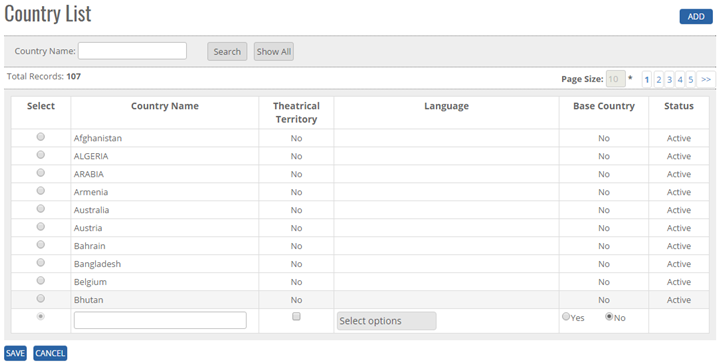
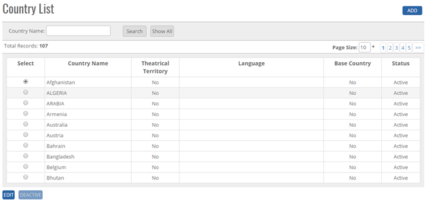


	<section>
		<article>
			<h2>Country<span></span></h2>
			<div>
				<p></p>
				

				<p><b>ADD New country in the master</b></p>

				<p>Click on Country List page, user will get Add button, search Button, Show all button, Page Record,</p>

				<p>Click Add Button on top right corner of the page as shown in the figure and the following page will open.</p>

				<div class="triangle-border top">				
					
				</div>

				<p><b>To Add country in the system, system will have following fields</b></p>

				<p>- Country name in Text Box (alphanumeric is valid)</p>

				<p>- Select Multiple Language from the list Box</p>

				<p>- User can select Theatrical Territory as option. If selected it will become Theatrical Circuit.</p>

				<p>In above image, user can see the <b>Save</b> and <b>Cancel</b> button. Click on Save button, country will get saved and Clicking on Cancel Button than the Record will not get updated.</p>

				<p><b>Note:</b> Country Name will be Unique in the system.</p>

				<p><b>Modify Existing Country</b></p>

				<p>Click on Edit, It will show Country Name, Theatrical Territory, Language,(As per added previously ) Search button, Show all button, Edit Button, Deactive button, page record as shown in below image.</p>

				<p><b>Note:</b> By default Country status will show ACTIVE.</p>

				<div class="triangle-border top">				
					
				</div>


				<p>Go To >>Master>>Country >> Search Country Name >> Click Radio Button (Country Name)>><b>EDIT</b></p>

				<p>System will allow to edit all fields as shown in image. </p>

				<p>- User can change any field shown in above image. </p>

				<p>- Click Update Button user will get alert message <b>"Country Record Updated Successfully"</b>.</p>

				<p>- Click Cancel Button record then the record will not get updated </p>

				<p>Base Country - This will show Base Country as 'India' if 'Theatrical Territory' is set as Yes.</p>


				<p><b>Deactivate/ Activate Existing Country</b></p>

				<p><b>DeActive</b> - Click on Deactivate Button, once the button is clicked it will ask confirmation message "Are you sure you want to Deactivate this record" with "OK and cancel" button.</p>

				<p>If user clicks on OK Button, record will get deactivated and if clicked on Cancel, record will not get deactivated.</p>

				<p><b>Active</b> - Same way once a record is deactivated, system will show Active button. If user clicks on Active button, record will get activated.</p>


				<p><b>Search Existing Criteria</b></p>

				<p>- User can search the country name and then click on <b>Search</b>, it will show the result as per the search criteria. User can search name by single alphabet.</p>

				<p>- If user want to check all country name then click on <b>Show All</b> Button. It will show the list </p>

				<p>- Click on page no, System will navigate the desired page, per page 10 records will be displayed. </p>
			</div>
		</article>
	</section>
	